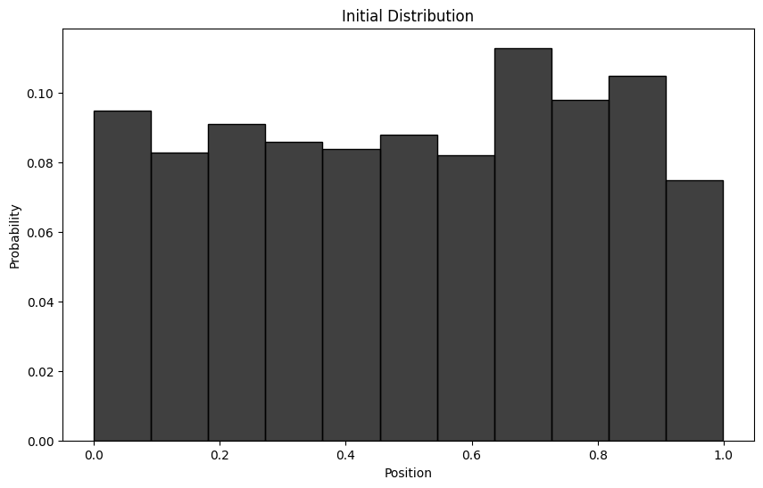
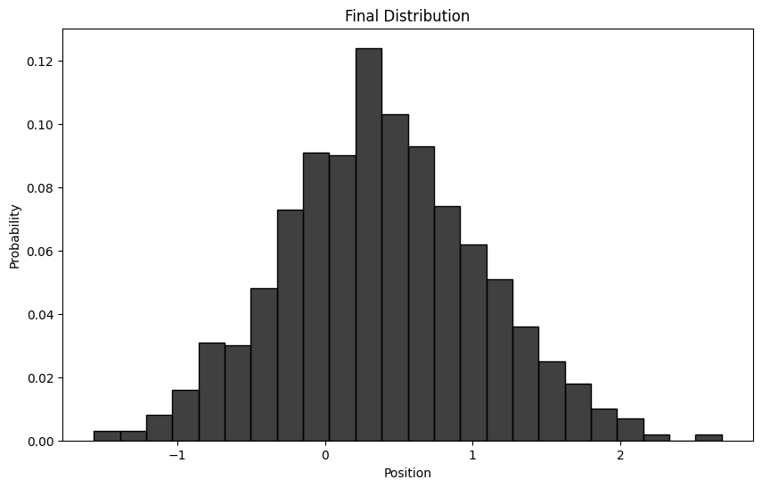

Diffusion Model¶
References:
1. pts/model/time_grad/time_grad_network.py
import dataclasses
from functools import cached_property
import numpy as np
import pandas as pd
import plotly.express as px
import torch
import torch.nn as nn
from loguru import logger
@dataclasses.dataclass
class DiffusionParams:
""" """
steps: int
beta: float
@cached_property
def alpha(self) -> float:
""" """
return 1.0 - self.beta
@cached_property
def alpha_bar_by_step(self) -> np.ndarray:
""" """
return np.cumprod(self.alpha_by_step)
@cached_property
def beta_by_step(self) -> np.ndarray:
""" """
return np.array([self.beta] * self.steps)
@cached_property
def alpha_by_step(self) -> np.ndarray:
""" """
return np.array([self.alpha] * self.steps)
# @cached_property
# def sigma_q_squared(self) -> float:
# r"""
# $$
# \sigma_q^2(t) = \frac{
# (1 - \alpha(t))(1 - \bar\alpha(t-1))
# }{1 - \bar\alpha(t)}
# $$
# """
# sigma_q_squared = (
# 1 - self.alpha_by_step[1:]
# ) * (1 - self.alpha_bar_by_step[:-1]) / (1 - self.alpha_bar_by_step[1:])
# return np.insert(sigma_q_squared, 0, 0)
class Diffusion(nn.Module):
def __init__(
self,
batch_size: int,
params: DiffusionParams,
dtype: torch.dtype = torch.float32,
):
self.batch_size = batch_size
self.params = params
self.dtype = dtype
@cached_property
def alpha_bar_by_step(self) -> torch.Tensor:
return torch.tensor(self.params.alpha_bar_by_step, dtype=self.dtype).detach()
@cached_property
def alpha_by_step(self) -> torch.Tensor:
return torch.tensor(self.params.alpha_by_step, dtype=self.dtype).detach()
# @cached_property
# def sigma_q_squared(self) -> torch.Tensor:
# return torch.tensor(self.params.sigma_q_squared, dtype=self.dtype)
def likelihood(self):
pass
def _gaussian(self, n_var: int, length: int) -> torch.Tensor:
return torch.normal(mean=0, std=1, size=(n_var, length))
@cached_property
def noise(self) -> torch.Tensor:
return self._gaussian(self.batch_size, self.params.steps).detach()
def _forward_process(self, initial: torch.Tensor) -> torch.Tensor:
return (
torch.outer(
initial,
torch.sqrt(self.alpha_bar_by_step),
)
+ torch.sqrt(1 - self.alpha_bar_by_step) * self.noise
)
def _forward_process_by_step(self, state: torch.Tensor, step: int) -> torch.Tensor:
r"""Assuming that we know the noise at step $t$,
$$
x(t) = \sqrt{\alpha(t)}x(t-1) + \sqrt{1 - \alpha(t)}\epsilon(t)
$$
"""
return (
torch.sqrt(self.alpha_by_step[step]) * state
+ torch.sqrt(1 - self.alpha_by_step[step]) * self.noise[:, step]
)
def _inverse_process_by_step(self, state: torch.Tensor, step: int) -> torch.Tensor:
r"""Assuming that we know the noise at step $t$,
$$
x(t-1) = \frac{1}{\sqrt{\alpha(t)}}
(x(t) - \sqrt{1 - \alpha(t)}\epsilon(t))
$$
"""
return (
state - torch.sqrt(1 - self.alpha_by_step[step]) * self.noise[:, step]
) / torch.sqrt(self.alpha_by_step[step])
def forward(self):
pass
diffusion_params = DiffusionParams(
steps=100,
beta=0.005,
# beta=0,
)
diffusion_batch_size = 1000
# diffusion_batch_size = 2
diffusion_process = Diffusion(diffusion_batch_size, diffusion_params)
# diffusion_initial_x = torch.sin(
# torch.linspace(0, 1, diffusion_batch_size)
# .reshape(diffusion_batch_size)
# )
diffusion_initial_x = torch.rand(diffusion_batch_size)
# diffusion_initial_x = (
# torch.distributions.Beta(torch.tensor([0.5]), torch.tensor([0.5]))
# .sample((diffusion_batch_size, 1))
# .reshape(diffusion_batch_size)
# )
diffusion_initial_x
tensor([7.7775e-01, 2.5996e-03, 8.9573e-01, 2.8487e-02, 8.6702e-01, 6.3107e-01,
1.4697e-02, 5.6454e-01, 4.8029e-01, 3.7040e-01, 1.6683e-01, 1.2759e-01,
2.5198e-01, 7.2493e-01, 5.6882e-01, 6.8986e-01, 2.5026e-01, 4.2498e-01,
1.4950e-01, 6.0333e-02, 9.6513e-01, 7.2014e-01, 5.3760e-01, 2.4866e-01,
6.2440e-02, 3.5743e-01, 6.3690e-01, 5.4904e-01, 6.6745e-01, 2.7166e-01,
8.4943e-02, 5.8873e-01, 5.2532e-01, 8.4310e-01, 4.8329e-01, 2.1650e-01,
7.9686e-01, 6.1594e-01, 6.0277e-01, 9.7054e-01, 3.9735e-02, 9.0588e-01,
9.9158e-01, 7.8630e-01, 8.5138e-01, 2.3773e-01, 6.2784e-01, 7.2167e-01,
3.2273e-01, 1.7800e-01, 4.6897e-01, 1.3501e-01, 7.2497e-01, 6.2923e-01,
6.0175e-01, 7.1988e-01, 4.4167e-01, 7.4963e-01, 5.7014e-01, 9.5285e-01,
1.9862e-01, 2.0671e-01, 5.4677e-01, 4.3996e-02, 1.8597e-01, 6.6931e-01,
4.9900e-01, 7.9565e-01, 3.7688e-01, 5.2546e-01, 2.0067e-01, 1.4955e-01,
7.3732e-01, 3.2959e-01, 4.9122e-01, 9.3785e-01, 6.2275e-01, 6.8126e-01,
7.0630e-01, 6.1048e-01, 6.0603e-02, 4.7585e-01, 5.8108e-01, 2.2769e-01,
5.3971e-01, 6.8321e-01, 1.6413e-01, 1.9077e-01, 8.4308e-01, 2.9310e-01,
8.6060e-01, 5.1602e-01, 6.7872e-01, 9.7942e-01, 7.3843e-01, 8.1786e-01,
7.7456e-04, 4.9613e-01, 1.0111e-01, 9.8224e-01, 9.1857e-01, 2.4136e-01,
3.7621e-01, 2.4404e-01, 1.3175e-01, 3.8267e-01, 1.3462e-01, 2.7758e-01,
7.7329e-01, 6.2881e-01, 9.2023e-01, 9.2068e-01, 9.7770e-01, 9.0131e-01,
2.2477e-01, 5.4225e-01, 5.4110e-01, 1.6160e-02, 6.3782e-01, 3.3365e-01,
9.5199e-01, 5.7746e-01, 8.4396e-01, 4.8976e-01, 6.4052e-01, 9.0340e-01,
5.0595e-01, 6.4192e-01, 8.8458e-01, 2.5237e-01, 9.3700e-01, 1.4786e-01,
2.3235e-01, 8.7961e-01, 1.9093e-01, 8.6167e-01, 7.8171e-01, 9.7507e-01,
7.7072e-01, 9.9421e-01, 8.8434e-01, 2.1071e-01, 8.7159e-01, 2.4253e-01,
4.7680e-01, 6.6068e-01, 6.2021e-01, 2.2684e-01, 3.5826e-01, 6.4616e-01,
7.6931e-01, 2.6578e-01, 6.0351e-01, 8.5048e-01, 4.4067e-01, 6.2625e-01,
7.5104e-01, 2.7441e-01, 8.8279e-01, 6.9316e-01, 1.1449e-01, 5.2794e-01,
6.7864e-01, 2.3386e-01, 8.4397e-01, 7.9805e-01, 6.1662e-03, 8.2585e-02,
2.1492e-01, 4.6439e-01, 6.6296e-02, 7.6129e-01, 8.2308e-01, 5.4854e-01,
5.7754e-01, 3.5968e-01, 9.7841e-01, 6.4619e-02, 6.0760e-01, 6.8189e-01,
6.0830e-01, 7.3125e-01, 6.1340e-01, 9.1391e-01, 8.8631e-01, 2.2860e-01,
3.2060e-01, 2.3429e-01, 3.0797e-01, 5.4123e-01, 9.4756e-02, 7.6480e-01,
5.4720e-01, 7.9341e-01, 2.3891e-01, 1.0985e-01, 4.8592e-02, 4.8016e-01,
4.3936e-01, 3.2796e-01, 6.4088e-01, 4.0451e-02, 2.5374e-01, 1.5751e-01,
8.4985e-01, 5.4544e-04, 6.6412e-01, 9.9078e-01, 2.6698e-01, 9.1085e-01,
1.1263e-01, 6.0111e-02, 1.0284e-01, 3.7929e-01, 5.8882e-01, 3.9850e-01,
5.8496e-01, 7.2087e-01, 9.5728e-01, 5.9866e-01, 5.5852e-01, 5.3049e-01,
1.0203e-01, 6.8761e-01, 9.5779e-01, 9.8760e-01, 3.0381e-01, 6.5888e-01,
7.5650e-01, 8.7441e-01, 9.9628e-01, 6.2763e-01, 1.6729e-01, 5.5852e-01,
7.6903e-01, 5.1704e-02, 5.2176e-01, 8.3529e-01, 2.0617e-01, 9.1318e-01,
6.5168e-01, 7.1317e-01, 4.5139e-01, 9.4695e-01, 3.9636e-01, 7.5042e-01,
6.7440e-01, 8.9903e-01, 1.7006e-01, 3.3402e-01, 7.0436e-01, 9.0939e-01,
6.8231e-01, 7.9774e-01, 5.3023e-01, 5.1610e-01, 7.6396e-01, 5.1958e-01,
3.2967e-01, 3.5324e-01, 6.9631e-01, 7.1903e-01, 9.7596e-01, 9.2130e-03,
4.2002e-01, 6.5758e-02, 8.3896e-01, 6.7460e-02, 8.5848e-01, 8.6921e-01,
2.8666e-01, 7.7573e-01, 6.9970e-01, 4.3003e-01, 2.7693e-01, 4.2843e-01,
5.2535e-01, 6.5434e-02, 2.5410e-01, 9.5170e-01, 3.6324e-01, 7.7636e-01,
7.8613e-01, 1.7817e-01, 4.0108e-01, 7.6408e-01, 4.5393e-01, 8.9434e-01,
5.1267e-01, 7.5307e-01, 2.5809e-01, 1.5458e-01, 2.7147e-01, 7.3079e-01,
3.8734e-01, 3.8298e-01, 3.0626e-02, 3.1052e-01, 7.3706e-01, 8.8986e-01,
5.7330e-01, 4.3292e-01, 2.0249e-01, 4.1284e-01, 6.5766e-01, 1.8121e-01,
4.2965e-01, 5.8626e-01, 3.6327e-01, 4.0321e-01, 6.9334e-01, 6.5409e-01,
4.2427e-01, 1.6489e-01, 8.5117e-02, 6.3145e-01, 3.2458e-01, 7.8721e-01,
3.0656e-01, 5.8722e-01, 3.0550e-01, 6.4041e-01, 1.6568e-02, 8.7289e-01,
4.2902e-02, 6.4242e-01, 7.3430e-01, 3.8101e-01, 7.0357e-01, 7.5356e-02,
2.1209e-01, 8.9619e-01, 9.7166e-01, 3.9159e-01, 6.3906e-01, 6.8285e-01,
4.2104e-01, 4.6377e-01, 6.8677e-01, 3.2269e-01, 6.6650e-01, 2.4675e-01,
2.9736e-01, 4.8034e-01, 4.9603e-01, 2.6741e-01, 7.9447e-01, 3.0797e-01,
1.5957e-01, 3.4549e-01, 6.9508e-01, 8.8407e-01, 9.1275e-02, 3.7905e-01,
8.1314e-01, 8.8868e-01, 4.8188e-01, 9.5437e-01, 7.9598e-01, 4.1531e-01,
7.0536e-01, 9.0533e-01, 6.8560e-01, 8.9861e-01, 1.0241e-01, 6.3237e-01,
7.3239e-01, 4.3845e-01, 9.8481e-02, 5.7864e-01, 9.6508e-01, 6.0801e-01,
3.5014e-01, 5.1751e-01, 8.0159e-01, 1.1674e-01, 2.4511e-01, 8.7595e-01,
4.9931e-01, 2.0810e-01, 4.6225e-01, 3.1085e-02, 2.4318e-01, 5.6451e-01,
8.3331e-01, 3.9343e-01, 5.2788e-01, 9.6819e-01, 2.0900e-01, 9.3971e-01,
6.4002e-01, 2.4179e-02, 2.9278e-01, 3.5854e-01, 1.6630e-01, 4.4320e-01,
4.8403e-01, 9.9841e-01, 4.0711e-01, 5.2067e-01, 9.4308e-02, 1.5326e-01,
9.2903e-01, 4.2009e-01, 3.5016e-01, 3.8493e-01, 4.1645e-01, 5.0718e-01,
9.2889e-01, 5.9775e-01, 6.6466e-02, 6.0154e-01, 7.5452e-01, 7.1951e-02,
5.3474e-01, 3.4430e-01, 3.2890e-01, 6.7426e-02, 9.7682e-01, 1.0032e-01,
7.3257e-01, 3.2214e-01, 4.6050e-01, 8.2653e-01, 2.6279e-01, 3.5414e-02,
9.9554e-01, 9.5582e-01, 5.4223e-01, 3.2331e-01, 8.2948e-01, 4.7821e-02,
5.5640e-01, 6.6080e-01, 5.7909e-01, 4.5128e-01, 9.6965e-01, 7.8449e-01,
5.8548e-01, 9.4105e-01, 7.1899e-01, 6.7650e-01, 2.9274e-01, 7.0456e-01,
8.8447e-01, 8.0095e-01, 4.6605e-01, 7.8801e-01, 5.4600e-01, 8.7844e-01,
8.1421e-02, 1.8782e-01, 9.0921e-01, 1.1820e-01, 6.8928e-01, 7.1021e-01,
8.9415e-01, 1.0278e-01, 7.3842e-01, 1.5351e-01, 1.1304e-01, 7.7400e-01,
2.6465e-01, 1.8265e-01, 7.6791e-01, 8.6094e-01, 8.7606e-01, 1.0116e-01,
2.2351e-01, 8.2986e-01, 6.7074e-01, 2.2733e-01, 2.8505e-01, 4.6601e-01,
4.1463e-01, 6.8858e-01, 3.0736e-01, 3.4557e-01, 9.9313e-01, 3.6972e-01,
1.8696e-01, 1.0080e-01, 3.4693e-01, 1.5132e-01, 3.4358e-01, 9.3118e-01,
4.8359e-02, 7.4505e-01, 7.5342e-01, 4.9223e-01, 6.8864e-01, 1.1586e-01,
1.0392e-01, 2.9166e-02, 4.0281e-01, 2.6653e-01, 8.7507e-02, 3.5574e-01,
4.9399e-01, 3.8885e-01, 1.6902e-02, 7.9361e-01, 6.3418e-02, 1.1974e-01,
4.8186e-01, 7.5273e-01, 1.6932e-01, 7.9584e-01, 3.6735e-01, 4.8952e-01,
7.6881e-01, 3.0617e-01, 6.2502e-01, 8.8967e-01, 8.3056e-01, 7.3021e-01,
2.8281e-01, 6.3301e-01, 4.9556e-02, 4.3477e-01, 5.1404e-01, 9.4736e-01,
3.7648e-01, 4.2239e-01, 1.6176e-02, 8.2439e-01, 1.2797e-01, 7.1985e-01,
7.1590e-01, 7.0463e-01, 9.8746e-01, 8.2056e-01, 5.2468e-01, 1.5252e-01,
3.0611e-01, 7.2840e-01, 9.6575e-01, 8.0366e-01, 3.1065e-01, 7.0294e-01,
1.8660e-01, 8.7565e-04, 7.2417e-01, 3.4084e-01, 5.4660e-02, 3.6320e-01,
6.8421e-01, 3.5242e-02, 6.5374e-01, 2.8833e-02, 3.3636e-01, 5.7133e-01,
2.7856e-01, 9.4240e-01, 1.8305e-01, 6.0760e-01, 1.2833e-01, 4.7069e-01,
3.0750e-01, 2.2685e-01, 7.3897e-01, 3.7941e-01, 8.8522e-01, 7.2371e-01,
5.3601e-03, 2.9866e-01, 1.4292e-01, 1.4680e-01, 6.4781e-02, 5.7554e-01,
4.2656e-01, 6.8550e-01, 6.6180e-01, 5.5994e-01, 1.0606e-01, 2.0924e-01,
3.2525e-01, 7.5358e-01, 9.9037e-03, 6.5474e-01, 7.1112e-01, 2.6596e-01,
7.4475e-01, 5.3266e-01, 1.6579e-01, 2.2054e-01, 5.1728e-02, 7.0911e-02,
8.3083e-01, 1.8573e-01, 2.9299e-01, 1.9889e-01, 8.9104e-01, 7.2713e-01,
8.4764e-01, 4.3802e-01, 5.4559e-01, 5.1432e-01, 9.4528e-01, 5.4897e-01,
2.1803e-01, 3.7670e-01, 7.9393e-02, 8.0621e-01, 7.3804e-01, 4.9906e-01,
6.1492e-01, 7.6444e-01, 3.8084e-01, 7.8545e-01, 9.4032e-01, 8.0139e-01,
9.1406e-01, 3.4410e-02, 6.7650e-01, 4.8422e-01, 5.1009e-03, 3.4851e-01,
1.3183e-01, 5.0791e-01, 2.7883e-01, 9.0753e-01, 7.5274e-01, 1.1187e-01,
7.2958e-02, 4.2475e-01, 4.6859e-01, 3.7485e-01, 1.5859e-01, 9.2948e-01,
6.1692e-01, 2.8492e-01, 3.7137e-03, 5.0841e-01, 4.2595e-01, 7.2586e-01,
4.0947e-01, 4.5109e-01, 9.3411e-01, 5.2250e-01, 1.4618e-02, 7.6092e-01,
6.2295e-01, 8.0388e-01, 5.9361e-01, 5.5299e-01, 4.2948e-01, 9.3728e-01,
3.8873e-01, 2.0691e-01, 5.4546e-01, 6.5319e-01, 6.8088e-01, 4.8318e-01,
9.8598e-01, 9.4376e-01, 4.6390e-01, 6.5581e-02, 4.4518e-01, 8.5712e-01,
1.2211e-01, 8.6805e-01, 6.4558e-01, 1.8900e-01, 7.4766e-01, 6.8070e-01,
7.1700e-01, 3.7970e-01, 1.8861e-02, 1.0999e-01, 7.1632e-01, 1.3020e-01,
3.0324e-01, 7.4707e-01, 8.6258e-01, 6.5321e-02, 3.6113e-01, 5.5212e-01,
3.0473e-01, 6.5039e-01, 1.4016e-01, 7.1889e-01, 2.7115e-01, 4.7970e-01,
1.8653e-02, 9.2409e-01, 3.7443e-01, 8.6519e-01, 8.1863e-01, 1.9659e-01,
6.2090e-02, 2.6739e-01, 4.4408e-01, 4.9536e-02, 3.1252e-01, 4.8672e-01,
4.0193e-01, 8.3799e-01, 7.3112e-01, 1.1773e-01, 8.6357e-01, 7.8174e-01,
6.3846e-01, 9.7087e-01, 8.8215e-01, 9.8100e-01, 4.0457e-02, 7.4636e-01,
6.4701e-01, 9.6748e-01, 8.5181e-01, 8.4270e-01, 2.5210e-01, 5.5618e-01,
6.1268e-01, 2.9049e-01, 5.8486e-03, 8.3614e-01, 5.2293e-01, 7.5307e-01,
3.4375e-01, 6.9141e-01, 5.1986e-01, 8.8886e-02, 4.4001e-01, 8.0642e-01,
6.9916e-01, 3.4141e-01, 4.8531e-01, 1.5386e-01, 8.8560e-01, 7.7011e-01,
3.5852e-01, 4.0197e-01, 1.6917e-01, 9.0410e-01, 5.6652e-02, 8.9739e-02,
8.3546e-01, 1.4231e-01, 7.5872e-01, 1.9298e-01, 2.2334e-01, 6.6317e-01,
6.8090e-01, 2.9787e-01, 4.9769e-01, 7.2268e-01, 2.6624e-01, 8.3895e-02,
2.1302e-03, 2.6899e-01, 3.2295e-01, 4.3568e-01, 7.4568e-01, 9.8571e-01,
2.3218e-01, 5.5723e-01, 9.0697e-01, 2.0891e-02, 6.2216e-01, 5.6822e-01,
6.7836e-01, 7.0153e-01, 7.3307e-02, 7.8713e-01, 8.6419e-01, 2.2157e-01,
3.8879e-01, 8.5876e-01, 7.0462e-01, 4.5412e-01, 4.1135e-03, 1.0077e-03,
6.9164e-02, 9.5048e-01, 7.0820e-01, 5.0619e-01, 2.0390e-02, 8.4203e-01,
1.4392e-01, 7.9174e-01, 1.6168e-01, 1.0209e-01, 9.2645e-02, 7.6759e-01,
3.5858e-01, 9.3251e-01, 5.2742e-01, 4.8935e-01, 3.6429e-01, 2.3940e-01,
3.8057e-01, 3.4109e-01, 9.2896e-02, 4.4226e-01, 6.1727e-01, 1.7108e-01,
8.4865e-01, 5.1920e-01, 7.7916e-01, 1.6543e-01, 6.6999e-01, 8.7431e-01,
4.8421e-01, 6.1869e-01, 3.1869e-01, 5.4427e-01, 2.8945e-01, 6.5180e-01,
8.8363e-01, 2.2613e-01, 3.8391e-01, 8.3005e-01, 8.0331e-01, 6.6010e-01,
8.8596e-01, 7.2263e-01, 8.4103e-01, 8.8009e-01, 2.3610e-01, 6.6927e-01,
2.5128e-01, 1.1817e-01, 3.9681e-01, 4.7718e-01, 2.5893e-01, 4.3495e-01,
1.3493e-01, 2.4773e-01, 3.3844e-01, 7.9895e-01, 9.5699e-01, 6.3362e-02,
8.1743e-01, 8.9984e-01, 9.5229e-01, 1.8843e-01, 2.7876e-01, 9.0028e-01,
2.2192e-01, 5.3296e-01, 8.4839e-01, 1.0904e-02, 8.4025e-01, 8.6112e-01,
1.1830e-01, 4.2930e-01, 4.2108e-01, 2.9025e-01, 8.6971e-01, 5.4962e-01,
7.6904e-01, 6.3845e-01, 8.0178e-01, 6.7694e-02, 6.6343e-01, 1.8530e-01,
6.4330e-01, 6.8002e-01, 8.7087e-01, 5.2740e-02, 1.4102e-01, 5.3180e-01,
6.9374e-01, 3.5666e-01, 3.5258e-01, 8.7790e-01, 7.5954e-01, 5.0547e-01,
3.5620e-01, 4.5835e-01, 3.7510e-01, 4.4056e-01, 2.3522e-01, 7.1087e-01,
6.1566e-01, 2.3742e-01, 5.5114e-01, 4.9269e-02, 4.3503e-01, 4.2648e-01,
2.0570e-01, 8.5944e-01, 6.4330e-01, 8.6874e-02, 2.8968e-01, 3.5790e-01,
7.9048e-01, 8.1321e-01, 4.9819e-01, 7.6190e-03, 9.1852e-01, 1.3581e-01,
7.5183e-01, 3.2399e-01, 1.3880e-01, 7.9173e-02, 6.9724e-01, 9.8917e-01,
8.5540e-01, 1.9553e-01, 1.5356e-01, 8.0217e-01, 7.6672e-01, 1.8106e-01,
7.8420e-01, 1.2492e-02, 8.2971e-02, 8.3922e-01, 3.8834e-01, 2.2546e-01,
3.7024e-01, 7.1171e-01, 8.0455e-02, 3.4067e-01, 7.0084e-01, 6.8490e-01,
3.6791e-01, 8.7797e-01, 7.7800e-01, 5.9188e-01, 5.8658e-01, 7.4175e-02,
9.0019e-01, 6.5421e-01, 3.3252e-01, 2.2889e-01, 9.7904e-01, 3.3549e-01,
6.9161e-01, 9.4515e-01, 1.7380e-01, 6.1230e-01, 4.3354e-01, 5.2601e-01,
8.4111e-01, 3.8420e-02, 8.1740e-01, 1.6980e-01, 9.1878e-01, 2.1792e-01,
5.7883e-01, 6.4201e-01, 8.2646e-01, 7.1636e-01, 4.8284e-01, 2.6438e-01,
2.7945e-01, 5.9324e-01, 3.7198e-01, 5.5136e-01, 7.4510e-01, 5.8621e-01,
4.6951e-01, 7.7834e-02, 5.6186e-01, 3.6304e-01, 9.2944e-01, 1.4286e-01,
2.4521e-02, 9.9506e-01, 9.5994e-01, 1.3745e-01, 2.5560e-01, 5.9027e-01,
7.3438e-01, 8.7141e-03, 8.6143e-01, 8.5607e-01, 8.7939e-01, 3.8756e-02,
6.6746e-01, 1.2815e-01, 5.1976e-01, 8.9897e-01, 9.5882e-02, 6.2630e-01,
6.9545e-01, 8.4795e-01, 9.7535e-01, 4.2693e-01, 7.6053e-01, 9.1041e-01,
6.0815e-01, 7.3042e-01, 8.5945e-01, 4.9286e-01, 7.5139e-01, 2.1239e-01,
7.7489e-01, 4.9297e-01, 5.0023e-01, 8.8323e-01, 6.4429e-01, 7.9237e-01,
2.4938e-01, 4.6155e-01, 8.8885e-01, 2.1184e-01])
Forward process step by step¶
diffusion_steps_step_by_step = [diffusion_initial_x.detach().numpy()]
for i in range(0, diffusion_params.steps):
logger.info(f"step {i}")
i_state = (
diffusion_process._forward_process_by_step(
torch.from_numpy(diffusion_steps_step_by_step[-1]), step=i
)
.detach()
.numpy()
)
logger.info(f"i_state {i_state[:2]}")
diffusion_steps_step_by_step.append(i_state)
Output (61 lines)
... (80 earlier lines)
[32m2025-04-18 23:16:25.281[0m | [1mINFO [0m | [36m__main__[0m:[36m<module>[0m:[36m4[0m - [1mstep 40[0m
[32m2025-04-18 23:16:25.282[0m | [1mINFO [0m | [36m__main__[0m:[36m<module>[0m:[36m8[0m - [1mi_state [ 0.8094039 -0.33473575][0m
[32m2025-04-18 23:16:25.282[0m | [1mINFO [0m | [36m__main__[0m:[36m<module>[0m:[36m4[0m - [1mstep 41[0m
[32m2025-04-18 23:16:25.283[0m | [1mINFO [0m | [36m__main__[0m:[36m<module>[0m:[36m8[0m - [1mi_state [ 0.83325726 -0.35788843][0m
... (66 lines omitted) ...
[32m2025-04-18 23:16:25.319[0m | [1mINFO [0m | [36m__main__[0m:[36m<module>[0m:[36m8[0m - [1mi_state [ 0.7483727 -0.08260181][0m
[32m2025-04-18 23:16:25.320[0m | [1mINFO [0m | [36m__main__[0m:[36m<module>[0m:[36m4[0m - [1mstep 73[0m
[32m2025-04-18 23:16:25.320[0m | [1mINFO [0m | [36m__main__[0m:[36m<module>[0m:[36m8[0m - [1mi_state [ 0.7065493 -0.07097664][0m
[32m2025-04-18 23:16:25.321[0m | [1mINFO [0m | [36m__main__[0m:[36m<module>[0m:[36m4[0m - [1mstep 74[0m
[32m2025-04-18 23:16:25.322[0m | [1mINFO [0m | [36m__main__[0m:[36m<module>[0m:[36m8[0m - [1mi_state [ 0.6612688 -0.08965354][0m
[32m2025-04-18 23:16:25.329[0m | [1mINFO [0m | [36m__main__[0m:[36m<module>[0m:[36m4[0m - [1mstep 75[0m
[32m2025-04-18 23:16:25.363[0m | [1mINFO [0m | [36m__main__[0m:[36m<module>[0m:[36m8[0m - [1mi_state [ 0.6666412 -0.08845518][0m
[32m2025-04-18 23:16:25.364[0m | [1mINFO [0m | [36m__main__[0m:[36m<module>[0m:[36m4[0m - [1mstep 76[0m
[32m2025-04-18 23:16:25.366[0m | [1mINFO [0m | [36m__main__[0m:[36m<module>[0m:[36m8[0m - [1mi_state [ 0.63734996 -0.16654542][0m
[32m2025-04-18 23:16:25.368[0m | [1mINFO [0m | [36m__main__[0m:[36m<module>[0m:[36m4[0m - [1mstep 77[0m
[32m2025-04-18 23:16:25.374[0m | [1mINFO [0m | [36m__main__[0m:[36m<module>[0m:[36m8[0m - [1mi_state [ 0.6595737 -0.17816634][0m
[32m2025-04-18 23:16:25.375[0m | [1mINFO [0m | [36m__main__[0m:[36m<module>[0m:[36m4[0m - [1mstep 78[0m
[32m2025-04-18 23:16:25.377[0m | [1mINFO [0m | [36m__main__[0m:[36m<module>[0m:[36m8[0m - [1mi_state [ 0.59145856 -0.26650017][0m
[32m2025-04-18 23:16:25.377[0m | [1mINFO [0m | [36m__main__[0m:[36m<module>[0m:[36m4[0m - [1mstep 79[0m
[32m2025-04-18 23:16:25.378[0m | [1mINFO [0m | [36m__main__[0m:[36m<module>[0m:[36m8[0m - [1mi_state [ 0.61713743 -0.2778223 ][0m
[32m2025-04-18 23:16:25.379[0m | [1mINFO [0m | [36m__main__[0m:[36m<module>[0m:[36m4[0m - [1mstep 80[0m
[32m2025-04-18 23:16:25.380[0m | [1mINFO [0m | [36m__main__[0m:[36m<module>[0m:[36m8[0m - [1mi_state [ 0.6666499 -0.31620997][0m
[32m2025-04-18 23:16:25.380[0m | [1mINFO [0m | [36m__main__[0m:[36m<module>[0m:[36m4[0m - [1mstep 81[0m
[32m2025-04-18 23:16:25.381[0m | [1mINFO [0m | [36m__main__[0m:[36m<module>[0m:[36m8[0m - [1mi_state [ 0.78685683 -0.28278515][0m
[32m2025-04-18 23:16:25.381[0m | [1mINFO [0m | [36m__main__[0m:[36m<module>[0m:[36m4[0m - [1mstep 82[0m
[32m2025-04-18 23:16:25.382[0m | [1mINFO [0m | [36m__main__[0m:[36m<module>[0m:[36m8[0m - [1mi_state [ 0.75152725 -0.19486004][0m
[32m2025-04-18 23:16:25.382[0m | [1mINFO [0m | [36m__main__[0m:[36m<module>[0m:[36m4[0m - [1mstep 83[0m
[32m2025-04-18 23:16:25.383[0m | [1mINFO [0m | [36m__main__[0m:[36m<module>[0m:[36m8[0m - [1mi_state [ 0.74986356 -0.14494139][0m
[32m2025-04-18 23:16:25.384[0m | [1mINFO [0m | [36m__main__[0m:[36m<module>[0m:[36m4[0m - [1mstep 84[0m
[32m2025-04-18 23:16:25.384[0m | [1mINFO [0m | [36m__main__[0m:[36m<module>[0m:[36m8[0m - [1mi_state [ 0.78781325 -0.1104292 ][0m
[32m2025-04-18 23:16:25.385[0m | [1mINFO [0m | [36m__main__[0m:[36m<module>[0m:[36m4[0m - [1mstep 85[0m
[32m2025-04-18 23:16:25.385[0m | [1mINFO [0m | [36m__main__[0m:[36m<module>[0m:[36m8[0m - [1mi_state [ 0.80012774 -0.03022134][0m
[32m2025-04-18 23:16:25.386[0m | [1mINFO [0m | [36m__main__[0m:[36m<module>[0m:[36m4[0m - [1mstep 86[0m
[32m2025-04-18 23:16:25.386[0m | [1mINFO [0m | [36m__main__[0m:[36m<module>[0m:[36m8[0m - [1mi_state [ 0.88045436 -0.06423807][0m
[32m2025-04-18 23:16:25.387[0m | [1mINFO [0m | [36m__main__[0m:[36m<module>[0m:[36m4[0m - [1mstep 87[0m
[32m2025-04-18 23:16:25.387[0m | [1mINFO [0m | [36m__main__[0m:[36m<module>[0m:[36m8[0m - [1mi_state [0.8984322 0.01694922][0m
[32m2025-04-18 23:16:25.388[0m | [1mINFO [0m | [36m__main__[0m:[36m<module>[0m:[36m4[0m - [1mstep 88[0m
[32m2025-04-18 23:16:25.388[0m | [1mINFO [0m | [36m__main__[0m:[36m<module>[0m:[36m8[0m - [1mi_state [ 0.9198323 -0.09139688][0m
[32m2025-04-18 23:16:25.389[0m | [1mINFO [0m | [36m__main__[0m:[36m<module>[0m:[36m4[0m - [1mstep 89[0m
[32m2025-04-18 23:16:25.390[0m | [1mINFO [0m | [36m__main__[0m:[36m<module>[0m:[36m8[0m - [1mi_state [ 0.98721087 -0.06547409][0m
[32m2025-04-18 23:16:25.390[0m | [1mINFO [0m | [36m__main__[0m:[36m<module>[0m:[36m4[0m - [1mstep 90[0m
[32m2025-04-18 23:16:25.391[0m | [1mINFO [0m | [36m__main__[0m:[36m<module>[0m:[36m8[0m - [1mi_state [ 1.0306114 -0.0627986][0m
[32m2025-04-18 23:16:25.391[0m | [1mINFO [0m | [36m__main__[0m:[36m<module>[0m:[36m4[0m - [1mstep 91[0m
[32m2025-04-18 23:16:25.392[0m | [1mINFO [0m | [36m__main__[0m:[36m<module>[0m:[36m8[0m - [1mi_state [ 0.9438532 -0.01546319][0m
[32m2025-04-18 23:16:25.392[0m | [1mINFO [0m | [36m__main__[0m:[36m<module>[0m:[36m4[0m - [1mstep 92[0m
[32m2025-04-18 23:16:25.393[0m | [1mINFO [0m | [36m__main__[0m:[36m<module>[0m:[36m8[0m - [1mi_state [ 0.9463828 -0.04726296][0m
[32m2025-04-18 23:16:25.393[0m | [1mINFO [0m | [36m__main__[0m:[36m<module>[0m:[36m4[0m - [1mstep 93[0m
[32m2025-04-18 23:16:25.394[0m | [1mINFO [0m | [36m__main__[0m:[36m<module>[0m:[36m8[0m - [1mi_state [ 0.99907434 -0.04744781][0m
[32m2025-04-18 23:16:25.395[0m | [1mINFO [0m | [36m__main__[0m:[36m<module>[0m:[36m4[0m - [1mstep 94[0m
[32m2025-04-18 23:16:25.396[0m | [1mINFO [0m | [36m__main__[0m:[36m<module>[0m:[36m8[0m - [1mi_state [ 0.9595288 -0.04881873][0m
[32m2025-04-18 23:16:25.396[0m | [1mINFO [0m | [36m__main__[0m:[36m<module>[0m:[36m4[0m - [1mstep 95[0m
[32m2025-04-18 23:16:25.397[0m | [1mINFO [0m | [36m__main__[0m:[36m<module>[0m:[36m8[0m - [1mi_state [ 0.98240954 -0.09129829][0m
[32m2025-04-18 23:16:25.397[0m | [1mINFO [0m | [36m__main__[0m:[36m<module>[0m:[36m4[0m - [1mstep 96[0m
[32m2025-04-18 23:16:25.398[0m | [1mINFO [0m | [36m__main__[0m:[36m<module>[0m:[36m8[0m - [1mi_state [ 1.0371981 -0.13770024][0m
[32m2025-04-18 23:16:25.398[0m | [1mINFO [0m | [36m__main__[0m:[36m<module>[0m:[36m4[0m - [1mstep 97[0m
[32m2025-04-18 23:16:25.399[0m | [1mINFO [0m | [36m__main__[0m:[36m<module>[0m:[36m8[0m - [1mi_state [ 1.0262175 -0.1635927][0m
[32m2025-04-18 23:16:25.399[0m | [1mINFO [0m | [36m__main__[0m:[36m<module>[0m:[36m4[0m - [1mstep 98[0m
[32m2025-04-18 23:16:25.400[0m | [1mINFO [0m | [36m__main__[0m:[36m<module>[0m:[36m8[0m - [1mi_state [ 1.0525571 -0.17633782][0m
[32m2025-04-18 23:16:25.401[0m | [1mINFO [0m | [36m__main__[0m:[36m<module>[0m:[36m4[0m - [1mstep 99[0m
[32m2025-04-18 23:16:25.401[0m | [1mINFO [0m | [36m__main__[0m:[36m<module>[0m:[36m8[0m - [1mi_state [ 1.0235711 -0.19368996][0m
px.histogram(diffusion_initial_x)
px.histogram(diffusion_steps_step_by_step[0])
px.histogram(diffusion_steps_step_by_step[-1])
Calculate State at time t in one batch¶
diffusion_steps = diffusion_process._forward_process(diffusion_initial_x)
diffusion_initial_x.shape, diffusion_steps.shape
(torch.Size([1000]), torch.Size([1000, 100]))
px.histogram(diffusion_steps[:, -1].detach().numpy().squeeze())
Reverse step by step¶
diffusion_steps_reverse = [diffusion_steps_step_by_step[-1]]
for i in range(diffusion_params.steps - 1, -1, -1):
logger.info(f"step {i}")
i_state = (
diffusion_process._inverse_process_by_step(
torch.from_numpy(diffusion_steps_reverse[-1]), step=i
)
.detach()
.numpy()
)
logger.info(f"i_state {i_state[:2]}")
diffusion_steps_reverse.append(i_state)
Output (61 lines)
... (80 earlier lines)
[32m2025-04-18 23:16:25.681[0m | [1mINFO [0m | [36m__main__[0m:[36m<module>[0m:[36m4[0m - [1mstep 59[0m
[32m2025-04-18 23:16:25.682[0m | [1mINFO [0m | [36m__main__[0m:[36m<module>[0m:[36m8[0m - [1mi_state [ 0.6951474 -0.38879928][0m
[32m2025-04-18 23:16:25.682[0m | [1mINFO [0m | [36m__main__[0m:[36m<module>[0m:[36m4[0m - [1mstep 58[0m
[32m2025-04-18 23:16:25.683[0m | [1mINFO [0m | [36m__main__[0m:[36m<module>[0m:[36m8[0m - [1mi_state [ 0.73595834 -0.41042498][0m
... (66 lines omitted) ...
[32m2025-04-18 23:16:25.724[0m | [1mINFO [0m | [36m__main__[0m:[36m<module>[0m:[36m8[0m - [1mi_state [ 0.69292307 -0.45350495][0m
[32m2025-04-18 23:16:25.724[0m | [1mINFO [0m | [36m__main__[0m:[36m<module>[0m:[36m4[0m - [1mstep 26[0m
[32m2025-04-18 23:16:25.725[0m | [1mINFO [0m | [36m__main__[0m:[36m<module>[0m:[36m8[0m - [1mi_state [ 0.6937502 -0.60519886][0m
[32m2025-04-18 23:16:25.725[0m | [1mINFO [0m | [36m__main__[0m:[36m<module>[0m:[36m4[0m - [1mstep 25[0m
[32m2025-04-18 23:16:25.726[0m | [1mINFO [0m | [36m__main__[0m:[36m<module>[0m:[36m8[0m - [1mi_state [ 0.7822882 -0.8576625][0m
[32m2025-04-18 23:16:25.726[0m | [1mINFO [0m | [36m__main__[0m:[36m<module>[0m:[36m4[0m - [1mstep 24[0m
[32m2025-04-18 23:16:25.727[0m | [1mINFO [0m | [36m__main__[0m:[36m<module>[0m:[36m8[0m - [1mi_state [ 0.88714874 -0.76542556][0m
[32m2025-04-18 23:16:25.727[0m | [1mINFO [0m | [36m__main__[0m:[36m<module>[0m:[36m4[0m - [1mstep 23[0m
[32m2025-04-18 23:16:25.728[0m | [1mINFO [0m | [36m__main__[0m:[36m<module>[0m:[36m8[0m - [1mi_state [ 0.8904635 -0.72792196][0m
[32m2025-04-18 23:16:25.728[0m | [1mINFO [0m | [36m__main__[0m:[36m<module>[0m:[36m4[0m - [1mstep 22[0m
[32m2025-04-18 23:16:25.729[0m | [1mINFO [0m | [36m__main__[0m:[36m<module>[0m:[36m8[0m - [1mi_state [ 0.92258674 -0.72440726][0m
[32m2025-04-18 23:16:25.729[0m | [1mINFO [0m | [36m__main__[0m:[36m<module>[0m:[36m4[0m - [1mstep 21[0m
[32m2025-04-18 23:16:25.730[0m | [1mINFO [0m | [36m__main__[0m:[36m<module>[0m:[36m8[0m - [1mi_state [ 0.88699913 -0.84595186][0m
[32m2025-04-18 23:16:25.730[0m | [1mINFO [0m | [36m__main__[0m:[36m<module>[0m:[36m4[0m - [1mstep 20[0m
[32m2025-04-18 23:16:25.731[0m | [1mINFO [0m | [36m__main__[0m:[36m<module>[0m:[36m8[0m - [1mi_state [ 0.7618088 -0.80919963][0m
[32m2025-04-18 23:16:25.731[0m | [1mINFO [0m | [36m__main__[0m:[36m<module>[0m:[36m4[0m - [1mstep 19[0m
[32m2025-04-18 23:16:25.732[0m | [1mINFO [0m | [36m__main__[0m:[36m<module>[0m:[36m8[0m - [1mi_state [ 0.78601956 -0.81135654][0m
[32m2025-04-18 23:16:25.738[0m | [1mINFO [0m | [36m__main__[0m:[36m<module>[0m:[36m4[0m - [1mstep 18[0m
[32m2025-04-18 23:16:25.743[0m | [1mINFO [0m | [36m__main__[0m:[36m<module>[0m:[36m8[0m - [1mi_state [ 0.680832 -0.5877883][0m
[32m2025-04-18 23:16:25.745[0m | [1mINFO [0m | [36m__main__[0m:[36m<module>[0m:[36m4[0m - [1mstep 17[0m
[32m2025-04-18 23:16:25.750[0m | [1mINFO [0m | [36m__main__[0m:[36m<module>[0m:[36m8[0m - [1mi_state [ 0.6215372 -0.5862306][0m
[32m2025-04-18 23:16:25.752[0m | [1mINFO [0m | [36m__main__[0m:[36m<module>[0m:[36m4[0m - [1mstep 16[0m
[32m2025-04-18 23:16:25.757[0m | [1mINFO [0m | [36m__main__[0m:[36m<module>[0m:[36m8[0m - [1mi_state [ 0.5862276 -0.50796723][0m
[32m2025-04-18 23:16:25.759[0m | [1mINFO [0m | [36m__main__[0m:[36m<module>[0m:[36m4[0m - [1mstep 15[0m
[32m2025-04-18 23:16:25.760[0m | [1mINFO [0m | [36m__main__[0m:[36m<module>[0m:[36m8[0m - [1mi_state [ 0.5905369 -0.31537208][0m
[32m2025-04-18 23:16:25.760[0m | [1mINFO [0m | [36m__main__[0m:[36m<module>[0m:[36m4[0m - [1mstep 14[0m
[32m2025-04-18 23:16:25.761[0m | [1mINFO [0m | [36m__main__[0m:[36m<module>[0m:[36m8[0m - [1mi_state [ 0.58957505 -0.2877775 ][0m
[32m2025-04-18 23:16:25.762[0m | [1mINFO [0m | [36m__main__[0m:[36m<module>[0m:[36m4[0m - [1mstep 13[0m
[32m2025-04-18 23:16:25.763[0m | [1mINFO [0m | [36m__main__[0m:[36m<module>[0m:[36m8[0m - [1mi_state [ 0.5959704 -0.25140628][0m
[32m2025-04-18 23:16:25.764[0m | [1mINFO [0m | [36m__main__[0m:[36m<module>[0m:[36m4[0m - [1mstep 12[0m
[32m2025-04-18 23:16:25.767[0m | [1mINFO [0m | [36m__main__[0m:[36m<module>[0m:[36m8[0m - [1mi_state [ 0.6318918 -0.2134175][0m
[32m2025-04-18 23:16:25.767[0m | [1mINFO [0m | [36m__main__[0m:[36m<module>[0m:[36m4[0m - [1mstep 11[0m
[32m2025-04-18 23:16:25.768[0m | [1mINFO [0m | [36m__main__[0m:[36m<module>[0m:[36m8[0m - [1mi_state [ 0.6900686 -0.2123212][0m
[32m2025-04-18 23:16:25.768[0m | [1mINFO [0m | [36m__main__[0m:[36m<module>[0m:[36m4[0m - [1mstep 10[0m
[32m2025-04-18 23:16:25.769[0m | [1mINFO [0m | [36m__main__[0m:[36m<module>[0m:[36m8[0m - [1mi_state [ 0.74115765 -0.12743005][0m
[32m2025-04-18 23:16:25.769[0m | [1mINFO [0m | [36m__main__[0m:[36m<module>[0m:[36m4[0m - [1mstep 9[0m
[32m2025-04-18 23:16:25.770[0m | [1mINFO [0m | [36m__main__[0m:[36m<module>[0m:[36m8[0m - [1mi_state [ 0.6804571 -0.17437676][0m
[32m2025-04-18 23:16:25.771[0m | [1mINFO [0m | [36m__main__[0m:[36m<module>[0m:[36m4[0m - [1mstep 8[0m
[32m2025-04-18 23:16:25.772[0m | [1mINFO [0m | [36m__main__[0m:[36m<module>[0m:[36m8[0m - [1mi_state [ 0.6416513 -0.07735392][0m
[32m2025-04-18 23:16:25.772[0m | [1mINFO [0m | [36m__main__[0m:[36m<module>[0m:[36m4[0m - [1mstep 7[0m
[32m2025-04-18 23:16:25.773[0m | [1mINFO [0m | [36m__main__[0m:[36m<module>[0m:[36m8[0m - [1mi_state [ 0.6909528 -0.14884506][0m
[32m2025-04-18 23:16:25.773[0m | [1mINFO [0m | [36m__main__[0m:[36m<module>[0m:[36m4[0m - [1mstep 6[0m
[32m2025-04-18 23:16:25.774[0m | [1mINFO [0m | [36m__main__[0m:[36m<module>[0m:[36m8[0m - [1mi_state [ 0.7000388 -0.16155608][0m
[32m2025-04-18 23:16:25.774[0m | [1mINFO [0m | [36m__main__[0m:[36m<module>[0m:[36m4[0m - [1mstep 5[0m
[32m2025-04-18 23:16:25.775[0m | [1mINFO [0m | [36m__main__[0m:[36m<module>[0m:[36m8[0m - [1mi_state [ 0.60679346 -0.19287485][0m
[32m2025-04-18 23:16:25.776[0m | [1mINFO [0m | [36m__main__[0m:[36m<module>[0m:[36m4[0m - [1mstep 4[0m
[32m2025-04-18 23:16:25.777[0m | [1mINFO [0m | [36m__main__[0m:[36m<module>[0m:[36m8[0m - [1mi_state [ 0.63962066 -0.17235725][0m
[32m2025-04-18 23:16:25.777[0m | [1mINFO [0m | [36m__main__[0m:[36m<module>[0m:[36m4[0m - [1mstep 3[0m
[32m2025-04-18 23:16:25.778[0m | [1mINFO [0m | [36m__main__[0m:[36m<module>[0m:[36m8[0m - [1mi_state [ 0.6361206 -0.05406848][0m
[32m2025-04-18 23:16:25.778[0m | [1mINFO [0m | [36m__main__[0m:[36m<module>[0m:[36m4[0m - [1mstep 2[0m
[32m2025-04-18 23:16:25.779[0m | [1mINFO [0m | [36m__main__[0m:[36m<module>[0m:[36m8[0m - [1mi_state [ 0.7482846 -0.05167478][0m
[32m2025-04-18 23:16:25.779[0m | [1mINFO [0m | [36m__main__[0m:[36m<module>[0m:[36m4[0m - [1mstep 1[0m
[32m2025-04-18 23:16:25.780[0m | [1mINFO [0m | [36m__main__[0m:[36m<module>[0m:[36m8[0m - [1mi_state [ 0.7793836 -0.10398894][0m
[32m2025-04-18 23:16:25.780[0m | [1mINFO [0m | [36m__main__[0m:[36m<module>[0m:[36m4[0m - [1mstep 0[0m
[32m2025-04-18 23:16:25.781[0m | [1mINFO [0m | [36m__main__[0m:[36m<module>[0m:[36m8[0m - [1mi_state [0.77775383 0.00259962][0m
px.histogram(diffusion_steps_reverse[-1])
px.histogram(diffusion_steps_reverse[0])
Diffusion Distributions¶
px.line(diffusion_params.alpha_bar_by_step)
df_diffusion_example = pd.DataFrame(
np.concatenate(
[
diffusion_initial_x.reshape(1, diffusion_batch_size).detach().numpy(),
diffusion_steps.T.detach().numpy(),
]
),
columns=[f"x_{i}" for i in range(len(diffusion_steps))],
)
df_diffusion_example["step"] = df_diffusion_example.index
df_diffusion_example_melted = df_diffusion_example.melt(
id_vars=["step"], var_name="variable", value_name="value"
)
df_diffusion_example_melted.tail()
| step | variable | value | |
|---|---|---|---|
| 100995 | 96 | x_999 | 0.147864 |
| 100996 | 97 | x_999 | -0.425635 |
| 100997 | 98 | x_999 | -0.156875 |
| 100998 | 99 | x_999 | -0.942937 |
| 100999 | 100 | x_999 | -1.025280 |
px.histogram(
df_diffusion_example_melted,
x="value",
histnorm="probability density",
animation_frame="step",
)
/Users/leima/git/github/emptymalei/deep-learning/.venv/lib/python3.10/site-packages/plotly/express/_core.py:1985: FutureWarning:
When grouping with a length-1 list-like, you will need to pass a length-1 tuple to get_group in a future version of pandas. Pass `(name,)` instead of `name` to silence this warning.
px.violin(
df_diffusion_example_melted.loc[
df_diffusion_example_melted["step"].isin(
[0, 10, 20, 30, 40, 50, 60, 70, 80, 90]
)
],
x="step",
y="value",
)
px.line(
df_diffusion_example_melted,
x="step",
y="value",
color="variable",
)
/Users/leima/git/github/emptymalei/deep-learning/.venv/lib/python3.10/site-packages/plotly/express/_core.py:1985: FutureWarning:
When grouping with a length-1 list-like, you will need to pass a length-1 tuple to get_group in a future version of pandas. Pass `(name,)` instead of `name` to silence this warning.
Create Visuals¶
import matplotlib.pyplot as plt
import seaborn as sns
_, ax = plt.subplots(figsize=(10, 6))
sns.histplot(
df_diffusion_example_melted.loc[df_diffusion_example_melted["step"] == 0],
x="value",
stat="probability",
color="k",
label="Initial Distribution",
ax=ax,
)
ax.set_title("Initial Distribution")
ax.set_xlabel("Position")
Text(0.5, 0, 'Position')

_, ax = plt.subplots(figsize=(10, 6))
sns.histplot(
df_diffusion_example_melted.loc[
df_diffusion_example_melted["step"] == max(df_diffusion_example_melted["step"])
],
x="value",
stat="probability",
color="k",
ax=ax,
)
ax.set_title("Final Distribution")
ax.set_xlabel("Position")
Text(0.5, 0, 'Position')

Model¶
from lightning import LightningModule
@dataclasses.dataclass
class DiffusionEncoderParams:
"""Parameters for VAEEncoder and VAEDecoder
:param latent_size: latent space dimension
:param history_length: input sequence length
:param n_features: number of features
"""
latent_size: int = 40
num_layers: int = 2
history_length: int
n_features: int = 1
initial_state: torch.Tensor = None
@cached_property
def data_size(self) -> int:
"""The dimension of the input data
when flattened.
"""
return self.sequence_length * self.n_features
def asdict(self) -> dict:
return dataclasses.asdict(self)
class Encoder(nn.Module):
""" """
def __init__(self, params: DiffusionEncoderParams):
super().__init__()
self.params = params
self.hparams = params.asdict()
self.rnn = nn.GRU(
input_size=self.params.history_length,
hidden_size=self.params.latent_size,
num_layers=self.params.num_layers,
)
def forward(
self, x: torch.Tensor
) -> tuple[torch.Tensor, torch.Tensor, torch.Tensor]:
"""
:param x: input data, shape (batch_size, history_length, n_features)
"""
batch_size, _, _ = x.size()
x = x.transpose(1, 2)
outputs, state = self.rnn(x, self.params.initial_state)
return outputs, state
class Distribution(nn.Module):
""" """
def __init__(self, params: DiffusionEncoderParams, samples: int = 100):
super().__init__()
self.params = params
self.hparams = params.asdict()
self.samples = samples
self.linear = nn.Linear(self.params.latent_size, samples)
def forward(self, x: torch.Tensor) -> torch.Tensor:
return self.linear(x)
class DiffusionModel(nn.Module):
""" """
def __init__(
self,
encoder_params: DiffusionEncoderParams,
diffusion_params: DiffusionParams,
batch_size: int,
):
super().__init__()
def forward(self, x: torch.Tensor) -> torch.Tensor:
outputs, state = self.encoder(x)
distribution = self.distribution(outputs)
return distribution
class Model(LightningModule):
def __init__(
self,
encoder_params: DiffusionEncoderParams,
diffusion_params: DiffusionParams,
batch_size: int,
):
self.encoder = Encoder(encoder_params)
self.diffusion = Diffusion(batch_size, diffusion_params)
self.distribution = Distribution(encoder_params, samples=100)
def forward(self, x: torch.Tensor) -> torch.Tensor:
outputs, state = self.encoder(x)
distribution = self.distribution(outputs)
return distribution
def training_step(self, batch: torch.Tensor, batch_idx: int) -> torch.Tensor:
x = batch["x"]
y = batch["y"]
distribution = self(x)
loss = self.loss(distribution, y)
return loss
def loss(self, y: torch.Tensor, y_hat: torch.Tensor) -> torch.Tensor:
return
diffusion_params.steps
100
enc_params = DiffusionEncoderParams(
latent_size=10,
num_layers=1,
history_length=5,
n_features=1,
initial_state=None,
)
encoder = Encoder(
params=enc_params,
)
encoder(
x=torch.rand(8, 5, 1),
)[0].shape, encoder(
x=torch.rand(8, 5, 1),
)[-1].shape
(torch.Size([8, 1, 10]), torch.Size([1, 1, 10]))
class DiffusionEmbedding(nn.Module):
def __init__(self, dim, proj_dim, max_steps=500):
super().__init__()
self.register_buffer(
"embedding", self._build_embedding(dim, max_steps), persistent=False
)
self.projection1 = nn.Linear(dim * 2, proj_dim)
self.projection2 = nn.Linear(proj_dim, proj_dim)
def forward(self, diffusion_step):
x = self.embedding[diffusion_step]
x = self.projection1(x)
x = F.silu(x)
x = self.projection2(x)
x = F.silu(x)
return x
def _build_embedding(self, dim, max_steps):
steps = torch.arange(max_steps).unsqueeze(1) # [T,1]
dims = torch.arange(dim).unsqueeze(0) # [1,dim]
table = steps * 10.0 ** (dims * 4.0 / dim) # [T,dim]
table = torch.cat([torch.sin(table), torch.cos(table)], dim=1)
return table
class EpsilonTheta(nn.Module):
def __init__(
self,
target_dim,
cond_length,
time_emb_dim=16,
residual_layers=8,
residual_channels=8,
dilation_cycle_length=2,
residual_hidden=64,
):
super().__init__()
self.input_projection = nn.Conv1d(
1, residual_channels, 1, padding=2, padding_mode="circular"
)
self.diffusion_embedding = DiffusionEmbedding(
time_emb_dim, proj_dim=residual_hidden
)
self.cond_upsampler = CondUpsampler(
target_dim=target_dim, cond_length=cond_length
)
self.residual_layers = nn.ModuleList(
[
ResidualBlock(
residual_channels=residual_channels,
dilation=2 ** (i % dilation_cycle_length),
hidden_size=residual_hidden,
)
for i in range(residual_layers)
]
)
self.skip_projection = nn.Conv1d(residual_channels, residual_channels, 3)
self.output_projection = nn.Conv1d(residual_channels, 1, 3)
nn.init.kaiming_normal_(self.input_projection.weight)
nn.init.kaiming_normal_(self.skip_projection.weight)
nn.init.zeros_(self.output_projection.weight)
def forward(self, inputs, time, cond):
x = self.input_projection(inputs)
x = F.leaky_relu(x, 0.4)
diffusion_step = self.diffusion_embedding(time)
cond_up = self.cond_upsampler(cond)
skip = []
for layer in self.residual_layers:
x, skip_connection = layer(x, cond_up, diffusion_step)
skip.append(skip_connection)
x = torch.sum(torch.stack(skip), dim=0) / math.sqrt(len(self.residual_layers))
x = self.skip_projection(x)
x = F.leaky_relu(x, 0.4)
x = self.output_projection(x)
return x
def extract(a, t, x_shape):
b, *_ = t.shape
out = a.gather(-1, t)
mm = len(x_shape) - 1
return out.reshape(b, *((1,) * mm))
def q_sample(x_start, t, noise=None):
noise = default(noise, lambda: torch.randn_like(x_start))
return (
extract(sqrt_alphas_cumprod, t, x_start.shape) * x_start
+ extract(sqrt_one_minus_alphas_cumprod, t, x_start.shape) * noise
)
def p_losses(x_start, cond, t, noise=None):
loss_type = "l2"
noise = default(noise, lambda: torch.randn_like(x_start))
x_noisy = q_sample(x_start=x_start, t=t, noise=noise)
x_recon = denoise_fn(x_noisy, t, cond=cond)
if loss_type == "l1":
loss = torch.nn.functional.l1_loss(x_recon, noise)
elif loss_type == "l2":
loss = torch.nn.functional.mse_loss(x_recon, noise)
elif loss_type == "huber":
loss = torch.nn.functional.smooth_l1_loss(x_recon, noise)
else:
raise NotImplementedError()
return loss
def log_prob(self, x, cond, *args, **kwargs):
if self.scale is not None:
x /= self.scale
B, T, _ = x.shape
time = torch.randint(0, self.num_timesteps, (B * T,), device=x.device).long()
loss = p_losses(
x.reshape(B * T, 1, -1), cond.reshape(B * T, 1, -1), time, *args, **kwargs
)
return loss
tmp_x_start = torch.ones((2, 3))
tmp_x_start
tensor([[1., 1., 1.],
[1., 1., 1.]])
tmp_a = torch.Tensor([1, 2, 3, 4, 5])
tmp_a
tensor([1., 2., 3., 4., 5.])
extract(tmp_a, tmp_a, x_shape=tmp_x_start.shape)